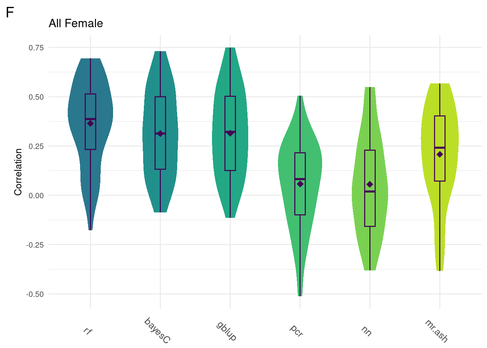
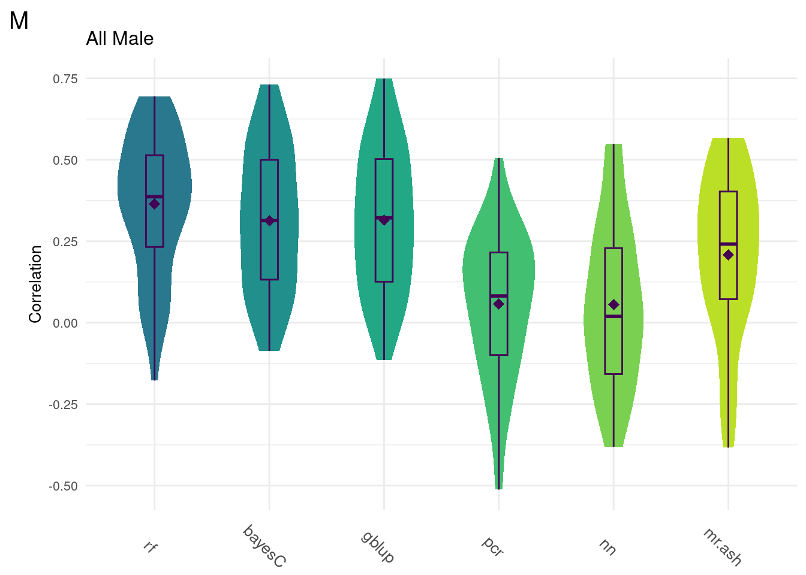
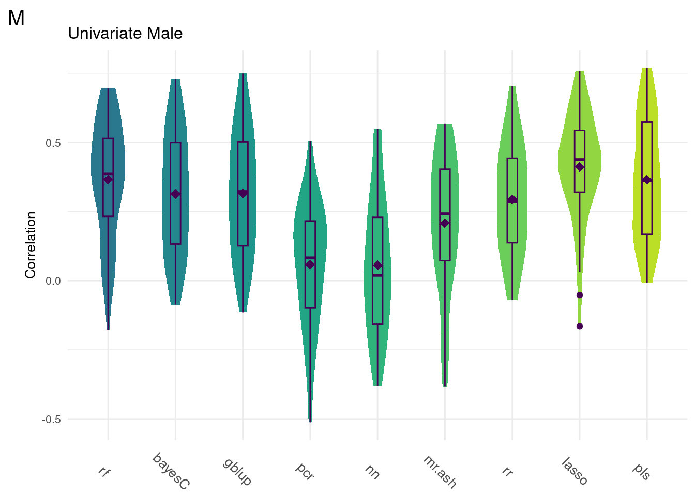

Covariance Correlations
Last updated: 2023-09-05
Checks: 6 1
Knit directory: dgrp-starve/
This reproducible R Markdown analysis was created with workflowr (version 1.7.0). The Checks tab describes the reproducibility checks that were applied when the results were created. The Past versions tab lists the development history.
Great! Since the R Markdown file has been committed to the Git repository, you know the exact version of the code that produced these results.
Great job! The global environment was empty. Objects defined in the global environment can affect the analysis in your R Markdown file in unknown ways. For reproduciblity it’s best to always run the code in an empty environment.
The command set.seed(20221101) was run prior to running the code in the R Markdown file. Setting a seed ensures that any results that rely on randomness, e.g. subsampling or permutations, are reproducible.
Great job! Recording the operating system, R version, and package versions is critical for reproducibility.
Nice! There were no cached chunks for this analysis, so you can be confident that you successfully produced the results during this run.
Using absolute paths to the files within your workflowr project makes it difficult for you and others to run your code on a different machine. Change the absolute path(s) below to the suggested relative path(s) to make your code more reproducible.
| absolute | relative |
|---|---|
| /data2/morgante_lab/nklimko/rep/dgrp-starve/ | . |
Great! You are using Git for version control. Tracking code development and connecting the code version to the results is critical for reproducibility.
The results in this page were generated with repository version d41213f. See the Past versions tab to see a history of the changes made to the R Markdown and HTML files.
Note that you need to be careful to ensure that all relevant files for the analysis have been committed to Git prior to generating the results (you can use wflow_publish or wflow_git_commit). workflowr only checks the R Markdown file, but you know if there are other scripts or data files that it depends on. Below is the status of the Git repository when the results were generated:
Ignored files:
Ignored: code/snake/
Ignored: data/snake/
Ignored: junk/
Ignored: notes/
Untracked files:
Untracked: .snakemake/
Untracked: Rplot.pdf
Untracked: analysis/Method/
Untracked: analysis/linearReg.Rmd
Untracked: bglr-f.R
Untracked: cnn.R
Untracked: code/PCA/
Untracked: code/data-prep/
Untracked: code/fabio/
Untracked: code/gBayesC.R
Untracked: code/id_bank_creation.R
Untracked: code/intro-starve/
Untracked: code/methodComp/
Untracked: code/regress/
Untracked: colorCode
Untracked: data/all_hist_data_f.Rds
Untracked: data/all_hist_data_m.Rds
Untracked: data/bayesF.rds
Untracked: data/bayesM.rds
Untracked: data/bglr-f-130k.rds
Untracked: data/bglr-f.rds
Untracked: data/bglr-m-130k.rds
Untracked: data/bglr-m.rds
Untracked: data/corLoop-f-minus.rds
Untracked: data/corLoop-f.rds
Untracked: data/corLoop-m-Minus.rds
Untracked: data/corLoop-m-minus.rds
Untracked: data/corLoop-m.rds
Untracked: data/fRegress.txt
Untracked: data/fRegress_adj.txt
Untracked: data/fm.burglar
Untracked: data/gbayesC-f.Rds
Untracked: data/gbayesC-m.Rds
Untracked: data/gbayesC.Rds
Untracked: data/gbayes_100k-f.Rds
Untracked: data/gbayes_100k-m.Rds
Untracked: data/goGroups.txt
Untracked: data/hist_data_f.Rds
Untracked: data/hist_data_m.Rds
Untracked: data/id_bank
Untracked: data/id_bank.Rds
Untracked: data/mPart.txt
Untracked: data/mRegress.txt
Untracked: data/mRegress_adj.txt
Untracked: data/multiReg.rData
Untracked: data/pheno_f
Untracked: data/pheno_m
Untracked: data/pls_hist_data_f.Rds
Untracked: data/sr_hist_data_f.Rds
Untracked: data/sr_hist_data_m.Rds
Untracked: data/starve-f.txt
Untracked: data/starve-m.txt
Untracked: data/xp-f.txt
Untracked: data/xp-m.txt
Untracked: data/xp_f
Untracked: data/xp_m
Untracked: data/y_save.txt
Untracked: f-cor.png
Untracked: figure/
Untracked: m-cor.png
Untracked: posterPlots.R
Untracked: runtime.png
Untracked: snake/
Untracked: temp.R
Unstaged changes:
Modified: .Rprofile
Modified: .gitattributes
Modified: .gitignore
Modified: README.md
Modified: _workflowr.yml
Modified: analysis/_site.yml
Modified: analysis/about.Rmd
Deleted: analysis/allHist2.Rmd
Deleted: analysis/gremlo.R
Modified: analysis/license.Rmd
Modified: analysis/linReg.Rmd
Deleted: analysis/methodComp-f.Rmd
Deleted: analysis/methodComp-m.Rmd
Modified: analysis/methodComp.Rmd
Modified: analysis/methodPred.Rmd
Modified: analysis/multiComp.Rmd
Modified: analysis/multiReg.Rmd
Modified: analysis/pca.Rmd
Modified: analysis/predict.Rmd
Modified: analysis/recap.Rmd
Modified: analysis/rewrite.Rmd
Modified: analysis/starve.Rmd
Deleted: analysis/stepwise-f.Rmd
Deleted: analysis/stepwise-m.Rmd
Deleted: analysis/testing.R
Deleted: analysis/tips.Rmd
Modified: analysis/top3.Rmd
Modified: analysis/trace.Rmd
Modified: code/README.md
Deleted: code/baseScript-lineComp.R
Deleted: code/combineSNP.R
Deleted: code/four-comp.76979.err
Deleted: code/four-comp.76979.out
Deleted: code/four-comp.sbatch
Deleted: code/fourLinePrep.R
Deleted: code/line_avgMinus.R
Deleted: code/line_avgPlus.R
Deleted: code/line_difMinus.R
Deleted: code/line_difPlus.R
Deleted: code/snpGene.R
Deleted: code/starveDataPrep.R
Modified: data/README.md
Modified: data/avgMinus-result.txt
Modified: data/avgMinus.txt
Modified: data/avgPlus-result.txt
Modified: data/avgPlus.txt
Modified: data/difMinus-result.txt
Modified: data/difMinus.txt
Modified: data/difPlus-result.txt
Modified: data/difPlus.txt
Modified: data/geneHits.txt
Modified: data/snpList.txt
Modified: data/starve.csv
Modified: dgrp-starve.Rproj
Modified: output/README.md
Modified: output/avgMinus-result.txt
Modified: output/avgPlus-result.txt
Modified: output/difMinus-result.txt
Modified: output/difPlus-result.txt
Note that any generated files, e.g. HTML, png, CSS, etc., are not included in this status report because it is ok for generated content to have uncommitted changes.
These are the previous versions of the repository in which changes were made to the R Markdown (analysis/allHist.Rmd) and HTML (docs/allHist.html) files. If you’ve configured a remote Git repository (see ?wflow_git_remote), click on the hyperlinks in the table below to view the files as they were in that past version.
| File | Version | Author | Date | Message |
|---|---|---|---|---|
| Rmd | d41213f | nklimko | 2023-09-05 | wflow_publish(“analysis/allHist.Rmd”) |
| html | fc8a5e4 | nklimko | 2023-09-04 | Build site. |
| html | cd946a5 | nklimko | 2023-09-04 | Build site. |
| Rmd | 28b05db | nklimko | 2023-09-04 | wflow_publish(“analysis/allHist.Rmd”) |
| html | feaac67 | nklimko | 2023-09-04 | Build site. |
| Rmd | 1606d88 | nklimko | 2023-09-04 | wflow_publish(“analysis/allHist.Rmd”) |
| html | 02ba6ed | nklimko | 2023-08-29 | Build site. |
| Rmd | 741e81d | nklimko | 2023-08-29 | wflow_publish(“analysis/allHist.Rmd”) |
| html | 2657f5c | nklimko | 2023-08-29 | Build site. |
| Rmd | 2f076f1 | nklimko | 2023-08-29 | wflow_publish(“analysis/allHist.Rmd”) |
| html | 882cd49 | nklimko | 2023-08-29 | Build site. |
| Rmd | 8ead827 | nklimko | 2023-08-29 | allhist pseudo |
| html | 9774b2a | nklimko | 2023-08-28 | Build site. |
| html | debb4cd | nklimko | 2023-08-25 | Build site. |
| html | d7f9155 | nklimko | 2023-08-25 | Build site. |
| Rmd | 2c78f8a | nklimko | 2023-08-25 | wflow_publish(“analysis/allHist.Rmd”) |
| html | a64ae81 | nklimko | 2023-08-15 | Build site. |
| Rmd | 3505b00 | nklimko | 2023-08-15 | wflow_publish(“analysis/allHist.Rmd”) |
#Correlation Coefficient Paths
uniF <- readRDS('snake/data/sr/40_all/f/cor/all.Rds')
uniM <- readRDS('snake/data/sr/40_all/f/cor/all.Rds')
multiF <- readRDS('snake/data/top3/40_all/f/cor/all.Rds')
multiM <- readRDS('snake/data/top3/40_all/f/cor/all.Rds')
#Runtimes
timeF <- 'snake/data/sr/40_all/f/time/all.Rds'
timeM <- 'snake/data/sr/40_all/f/time/all.Rds'#reorders 50 X m table to a (50*m) X 2 table
#converts method into factor to retain order
ggTidy <- function(data){
for(i in 1:dim(data)[2]){
name <- colnames(data)[i]
temp <- cbind(rep(name, dim(data)[1]), data[,i, with=FALSE])
if(i==1){
hold <- temp
} else{
hold <- rbind(hold, temp, use.names=FALSE)
}
}
colnames(hold) <- c("method", "cor")
hold$method <- factor(hold$method, levels=unique(hold$method))
return(hold)
}
#wrapper for ggplot call to custom fill sex, title, and y axis label
ggMake <- function(data, sex, custom.title, custom.Ylab){
plothole <- ggplot(data, aes(x=method, y=cor, fill=method)) +
geom_violin(color = NA, width = 0.65) +
geom_boxplot(color='#440154FF', width = 0.15) +
theme_minimal() +
stat_summary(fun=mean, color='#440154FF', geom='point',
shape=18, size=3, show.legend=FALSE) +
labs(x=NULL,y=custom.Ylab, tag=sex, title=custom.title) +
theme(legend.position='none',
axis.text.x = element_text(angle = -45, size=10),
text=element_text(size=10),
plot.tag = element_text(size=15)) +
scale_fill_viridis(begin = 0.4, end=0.9,discrete=TRUE)
return(plothole)
}Intro to why
Complex trait prediction is based on the notion that some traits are impacted by a large number of small-effect genes which makes diagnosis or prediction challenging.
We are using gene expression data over genomic frequencies as they have shown previously to provide more accurate models.
This project is designed to establish a baseline comparison for statistical methods commonly used in the field.
Intro to methods
In order to improve model accuracy, we look at shrinkage and variable selection. Too much of either can result in overfitting of the model, but failure to perform either results in large variance that diminishes model accuracy.
Shrinkage is based on the assumption that not all independent variables have the same effect on the response variable in a given model. The effects are scaled by a distribution of our choosing based on our assumption of the model. A normal distribution centered around 0 will scale most effects down while leaving more significant effects closer to 1. Changing the shape of the distribution changes the degree of shrinkage applied to the model.
Variable selection takes another step in model assumptions. We assume under a general model that all variables have some effect on the response even if the effect is small. In order to reduce noise, we can select for variables that only have stronger effects by discarding weaker or insignificant independent variables from the model. With genes, this models our assumption that not all genes have an effect on the trait of interest, while a number of genes will have a pronounced effect on our complex trait.
Method line by line
Random Forest: Random forest is a machine learning method that creates random networks of decision trees to create a linear regression Random Forest decision trees are used to discover impactful genes similar to how PCR selects for variance maximizing components.
Principal Component Regression (PCR): Principal Component Regression uses principal component analysis to find combinations of independent variables that maximize the change in variance on the response variable. This process greatly reduces the dimensionality of the data. Within this, variable selection can be performed optimally by finding the greatest change in total variance explained and only using principal components up to that point.
Neural Network (NN): Neural networks are a type of machine learning method where hidden layers of hyperparameters are used to evaluate the data. Learning is rewarded by maximizing change in variance. The current model has five layers with 5000, 2500, and 1000 hyperparameters in order.
Bayesian Variable Selection (BVS): Bayesian Variable Selection(BVS) uses a spike-and-slab prior to perform effect shrinkage and variable selection. The model is fit using Variational Inference(VI) methods.
BayesC - BayesC uses a spike-and-slab prior to perform effect shrinkage and variable selection. The model is fit using Markov Chain Monte Carlo(MCMC) methods.
Genomic Best Linear Unbiased Predictor (GBLUP): GBLUP is a linear mixed model created using the covariance of genomic relationships(geneXgene) to perform effect shrinkage.
Ridge Regression (RR):Ridge Regression is a penalized regression method that performs effect shrinkage only.
Least Absolute Shrinkage and Selection Operator (LASSO): LASSO uses the same penalized regression as Ridge regression with an added parameter to perform both effect shrinkage and variable selection.
Multiple Regression with Multivariate Adaptive Shrinkage (MR.MASH): Mr. Mash performs shrinkage and variable selection by using a custom mixed prior. This prior can be generated using summary statistics alone or can be layered with covariance matrices derived from strong effects.
All Models
Wtih traits that are correlated, we expect that changes in the trait of interest can be described by changes in additional trait values. We sought to incorporate this by taking the top three correlated traits into account in our multivariate models. The traits capillary feeding, free glycerol, and free glucose were selected for both males and females.
In order to see if correlated traits could be used to improve model accuracy, we performed both univariate and multivariate analyses with models that permitted multiple response prediction.
For every method tested, fifty replicates were created using an 80% train/20% test data split by DGRP2 line. Each column below is a distribution of the method’s correlation coefficient from all replicates.
#All Female
allData <- data.table(uniF, multiF)
print(colMeans(na.omit(allData))) rf bayesC gblup pcr nn mr.ash
0.35128325 0.30140171 0.30374352 0.04416158 0.05540557 0.18472388
rr lasso pls datadrive mlasso mr.mash
0.28260545 0.39068512 0.35476129 0.12601118 0.19058669 0.09047196
multigblup multibayesC
0.31083037 0.28933714 data <- na.omit(ggTidy(allData))
gg[[1]] <- ggMake(data, 'F', 'All Female', 'Correlation')
#Univariate Female
uniData <- uniF
data <- na.omit(ggTidy(uniData))
gg[[3]] <- ggMake(data, 'F', 'Univariate Female', 'Correlation')
#All Male
allData <- data.table(uniM, multiM)
print(colMeans(na.omit(allData))) rf bayesC gblup pcr nn mr.ash
0.35128325 0.30140171 0.30374352 0.04416158 0.05540557 0.18472388
rr lasso pls datadrive mlasso mr.mash
0.28260545 0.39068512 0.35476129 0.12601118 0.19058669 0.09047196
multigblup multibayesC
0.31083037 0.28933714 data <- na.omit(ggTidy(allData))
gg[[2]] <- ggMake(data, 'M', 'All Male', 'Correlation')
#Univariate Female
uniData <- uniM
data <- na.omit(ggTidy(uniData))
gg[[4]] <- ggMake(data, 'M', 'Univariate Male', 'Correlation')Univariate Models
plot_grid(gg[[1]], ncol=1)
plot_grid(gg[[2]], ncol=1)
Comparison shows that multivariate methods do not significantly improve the model accuracy. As such, we will focus on univariate methods moving forward.
Below are the univariate models alone.
plot_grid(gg[[3]], ncol=1)
plot_grid(gg[[4]], ncol=1)
sessionInfo()R version 4.1.2 (2021-11-01)
Platform: x86_64-pc-linux-gnu (64-bit)
Running under: Rocky Linux 8.5 (Green Obsidian)
Matrix products: default
BLAS/LAPACK: /opt/ohpc/pub/libs/gnu9/openblas/0.3.7/lib/libopenblasp-r0.3.7.so
locale:
[1] LC_CTYPE=en_US.UTF-8 LC_NUMERIC=C
[3] LC_TIME=en_US.UTF-8 LC_COLLATE=en_US.UTF-8
[5] LC_MONETARY=en_US.UTF-8 LC_MESSAGES=en_US.UTF-8
[7] LC_PAPER=en_US.UTF-8 LC_NAME=C
[9] LC_ADDRESS=C LC_TELEPHONE=C
[11] LC_MEASUREMENT=en_US.UTF-8 LC_IDENTIFICATION=C
attached base packages:
[1] stats graphics grDevices utils datasets methods base
other attached packages:
[1] reshape2_1.4.4 melt_1.10.0 ggcorrplot_0.1.4 lubridate_1.9.2
[5] forcats_1.0.0 stringr_1.5.0 purrr_1.0.1 readr_2.1.4
[9] tidyr_1.3.0 tibble_3.2.1 tidyverse_2.0.0 scales_1.2.1
[13] viridis_0.6.2 viridisLite_0.4.2 qqman_0.1.8 cowplot_1.1.1
[17] ggplot2_3.4.2 data.table_1.14.8 dplyr_1.1.2 workflowr_1.7.0
loaded via a namespace (and not attached):
[1] Rcpp_1.0.11 getPass_0.2-2 ps_1.7.5 rprojroot_2.0.3
[5] digest_0.6.33 utf8_1.2.3 plyr_1.8.8 R6_2.5.1
[9] evaluate_0.21 httr_1.4.5 highr_0.10 pillar_1.9.0
[13] rlang_1.1.1 rstudioapi_0.15.0 whisker_0.4.1 callr_3.7.3
[17] jquerylib_0.1.4 rmarkdown_2.23 labeling_0.4.2 munsell_0.5.0
[21] compiler_4.1.2 httpuv_1.6.9 xfun_0.39 pkgconfig_2.0.3
[25] htmltools_0.5.5 tidyselect_1.2.0 gridExtra_2.3 fansi_1.0.4
[29] calibrate_1.7.7 tzdb_0.3.0 withr_2.5.0 later_1.3.1
[33] MASS_7.3-60 grid_4.1.2 jsonlite_1.8.7 gtable_0.3.3
[37] lifecycle_1.0.3 git2r_0.31.0 magrittr_2.0.3 cli_3.6.1
[41] stringi_1.7.12 cachem_1.0.8 farver_2.1.1 fs_1.6.3
[45] promises_1.2.0.1 bslib_0.5.0 generics_0.1.3 vctrs_0.6.2
[49] tools_4.1.2 glue_1.6.2 hms_1.1.3 processx_3.8.2
[53] fastmap_1.1.1 yaml_2.3.7 timechange_0.2.0 colorspace_2.1-0
[57] knitr_1.43 sass_0.4.7